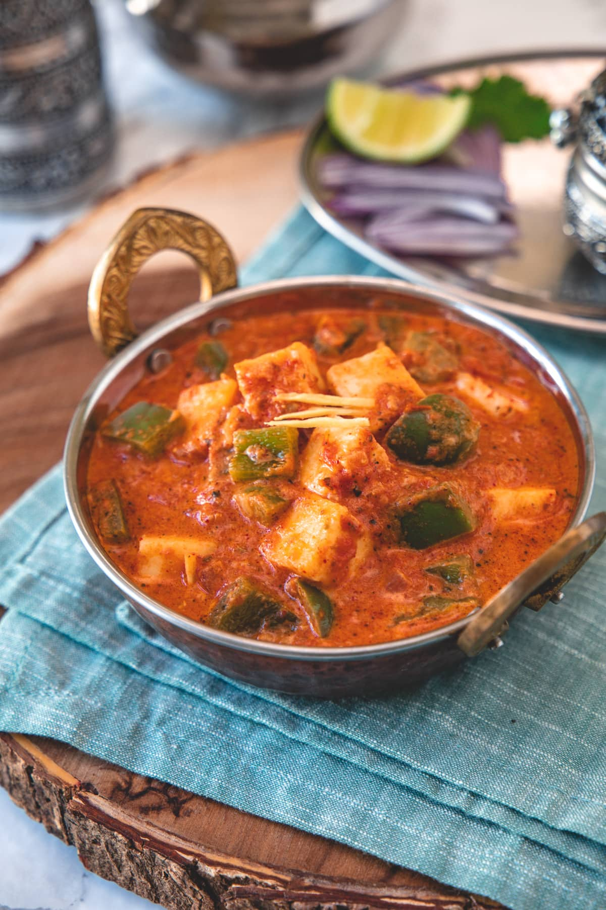

KADHAI PANEER

DESCRIPTION
punjabi cuisine is completely filled with creamy and rich gravy based curries mainly offered for lunch and dinner. particularly, paneer recipes get a lot of attention, especially from the vegetarian crowd. one such unique, full of spice flavoured recipe is kadai paneer recipe or karahi paneer known for its unique blend of spices infused into the soft and moist paneer.
Ingredients:
for kadai masala:
- 2 tsp coriander seeds
- 1 tsp cumin / jeera
- ½ tsp black pepper
- 3 dried kashmiri red chilli
for onion tomato paste:
- 2 tsp oil
- 3 clove garlic (crushed)
- 1 inch ginger (chopped)
- 1 onion (sliced)
- 2 tomato (finely chopped)
for kadai paneer gravy:
- 1 tbsp butter
- 1 bay leaf / tej patta
- 1 green chilli (slit)
- 1 tsp kasuri methi / dry fenugreek leaves
- ½ onion (petals)
- ½ capsicum (cube)
- ¼ tsp turmeric
- ½ tsp kashmiri red chilli powder
- 1 cup water
- 12 cube paneer / cottage cheese
- 2 tbsp cream
- ¼ tsp garam masala
- 2 tbsp coriander leaves
Steps:
- firstly, in a large kadai, heat 1 tbsp butter and saute 1 bay leaf, 1 green chilli, 1 tsp kasuri methi till they aromatic.
- further saute ½ onion petals and ½ cubed capsicum.
- add ¼ tsp turmeric and ½ tsp chilli powder.
- further add blended tomato-onion paste and mix well.
- in addition, add prepared kadai masala and 1 tsp salt.
- cook till the masala paste starts to release oil.
- now add ½ to 1 cup water adjusting consistency as required.
- add 12 cubes homemade paneer, 2 tbsp cream and mix gently.
- cover and simmer for 5 minutes.
- furthermore, add ¼ tsp garam masala and 2 tbsp coriander leaves. mix well.
- finally, serve restaurant-style kadai paneer gravy hot with garlic naan or chapati.
Go to Top of the page
Go to Main Menu